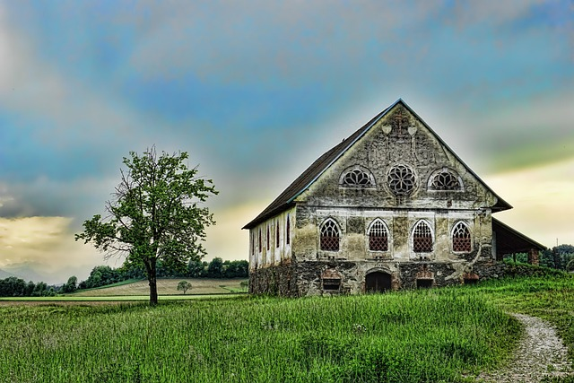

Birger Husförsäljning

Modern lyxvilla med panoramautsikt

Charmigt lantligt hus i rogivande miljö

Rustik fastighet med historisk karaktär
Välkommen till denna stilrena och moderna villa som kombinerar elegans med funktionalitet. Bostaden präglas av stora glaspartier som släpper in rikligt med naturligt ljus och skapar en harmonisk koppling mellan inne- och utemiljö. Den öppna planlösningen erbjuder generösa sällskapsytor, perfekt för både vardagsliv och sociala tillställningar. De rymliga terrasserna på övre plan ger en fantastisk utsikt över omgivningarna – en idealisk plats för avkoppling eller middagar i solnedgången. Huset är omgivet av en välskött gräsmatta och smakfullt anlagd trädgård, vilket skapar en privat och lugn oas. Här bor du med hög komfort, modern design och en känsla av exklusivitet i varje detalj.
Drömmer du om ett lugnt liv nära naturen? Detta unika hus erbjuder en idyllisk tillvaro mitt i öppna landskap med vidsträckta vyer. Med sitt karakteristiska utseende och grästak smälter huset naturligt in i omgivningen och skapar en genuin och naturnära känsla. Bostaden erbjuder en varm och inbjudande atmosfär med traditionella detaljer och en planlösning som passar både permanentboende och fritidshus. Här kan du njuta av tystnaden, den friska luften och de vackra årstidsskiftningarna direkt utanför dörren. Perfekt för dig som söker en harmonisk tillflyktsort bort från stadens tempo – utan att kompromissa med komfort.
Denna unika byggnad bär på en rik historia och erbjuder en charm som är svår att hitta i moderna hem. Med sin vackra fasad, dekorativa fönster och gedigna konstruktion är detta en fastighet med stor potential. Belägen i ett naturskönt landskap omgiven av grönska och öppna fält, erbjuder huset en lugn och inspirerande miljö. Interiören ger möjlighet att skapa ett personligt boende där originaldetaljer kan bevaras och kombineras med moderna inslag. Perfekt för den som söker något utöver det vanliga – kanske ett drömboende, ett kreativt projekt eller en investering med karaktär och själ.